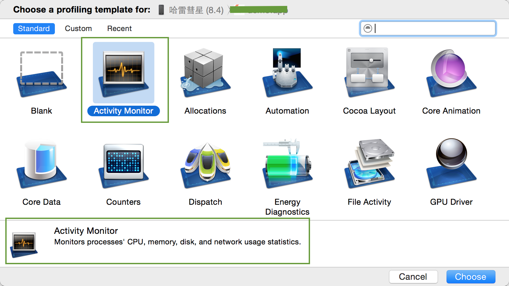
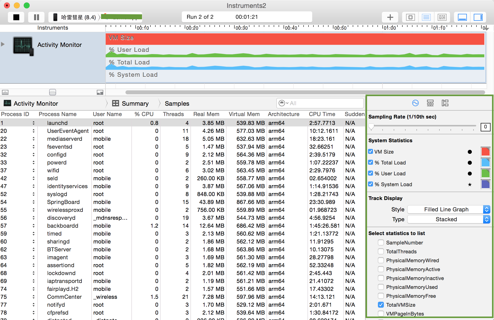
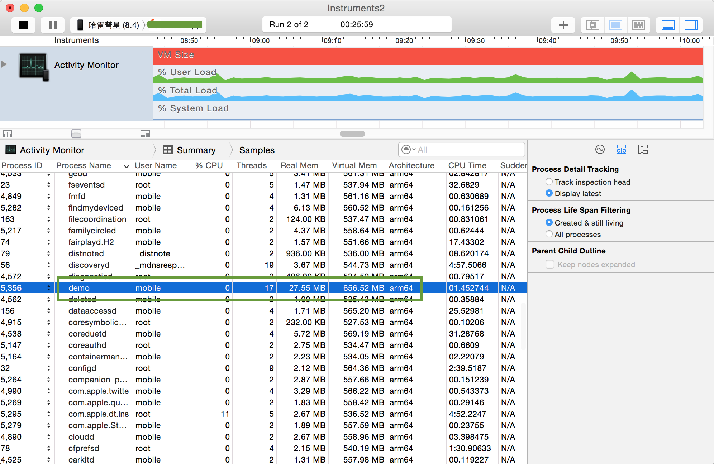
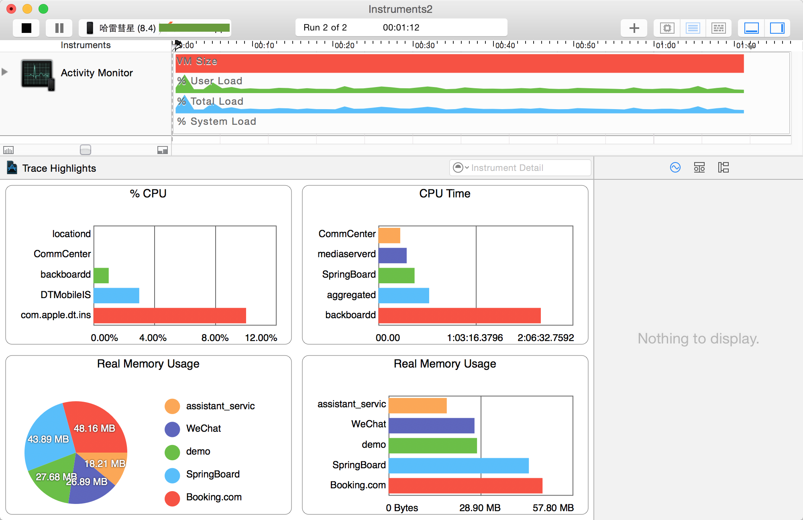

Monitor Memory Usage Using Activity Monitor
想要监控app内存的总体使用情况，包括实际内存和虚拟内存，可以使用Activity Monitor。在Instruments中选择Activity Monitor，同时下面有对它的介绍。

Activity Monitor默认配置了在Timeline面板中显示的内容，包括TotalVMSize、CPUTotalLoad、CPUUserLoad、CPUSystemLoad，在使用时可以根据自己的需要选择相关的分析内容进行显示，并且不同的内存使用部分可以使用不同的颜色加以区分，下面就是Activity Monitor在使用过程中的界面截图，在右下角可选择内存相关的分析内容。

- Physical Memory Wired——操作系统占用的内存
- Physical Memory Active——除操作系统外其它进程占用的内存
- Physical Memory Inactive——最近被释放的内存
- Physical Memory Used——profiling当前进程时使用的总内存
- Physical Memory Free——当前的可用内存
- Total VM Size——虚拟内存的占用量
在profiling的过程中，可以观察当前正在运行的进程的内存使用分析，例如demo的内存使用如下：

同时也可以与其它正在运行的进程进行比较，可以大致了解app所占用的内存是处于怎样的情况。从下图可以看出，哪个进程是内存的占用大户。

以上都只是对内存使用总体情况的宏观了解，如果想定位app的内存问题，还需要依赖Allocations、Leaks和Zombies。